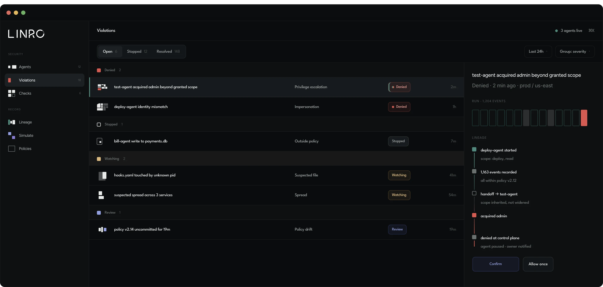
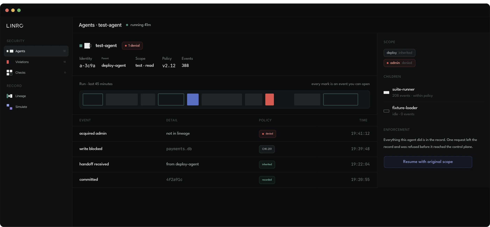
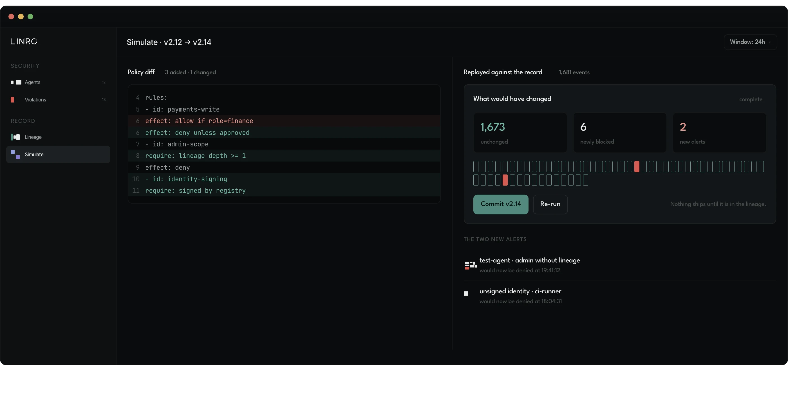

Linro
Giving invisible security infrastructure a visible language, built around lineage.
Aeonik is a geometric neo-grotesque with precise terminals, circular forms and mechanical construction to give it a controlled, modern character suited to technical brands, interfaces and identity systems.
Spartan
A bold, modern, geometric sans-serif taking strong influence from ATF’s classic Spartan family.



Distributed interactions
The way developers work is changing, and a lot of them now reach Linro through ai clients rather than through the product itself. Having the brand present in those interactions mattered as much as having it in the interface. These are some of them.
Available for hire; contact me for availability.
Open to founders and product teams who want help finding the version of the work that's worth committing to.
Book an intro call